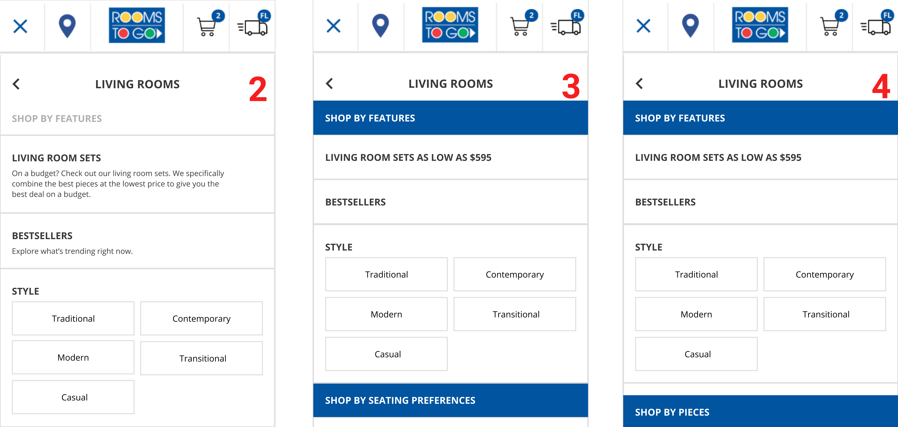
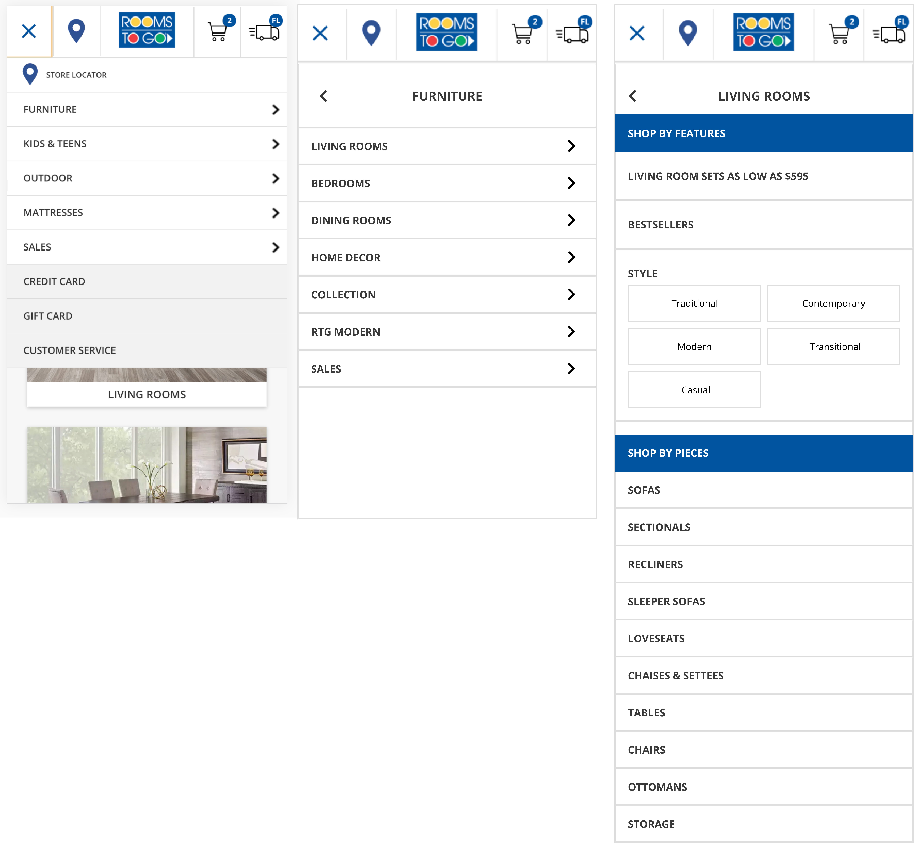
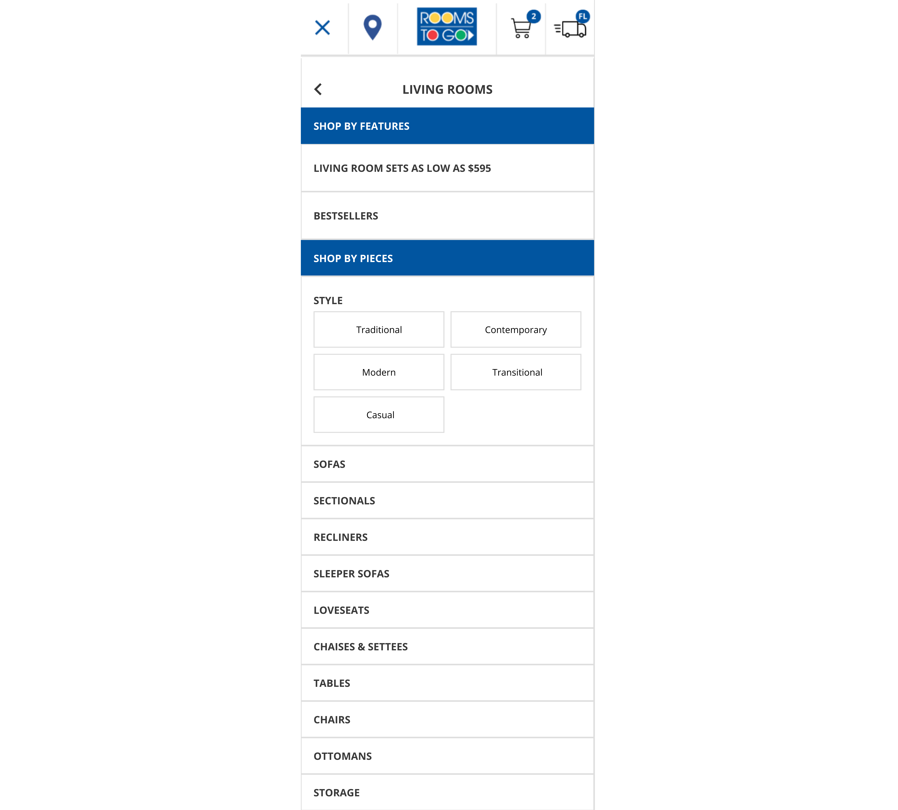

Rooms To Go Mobile Navigation Process
This is a take-home assignment from Rooms To Go and my most recent work. I wanted to feature this project because I learned a lot from feedbback and failure while presenting this project to the stakeholders. Simply, a reminder to myself to not make the same mistake again.
Duration: 1 week
TASK: Rooms To Go currently just list all of the different categories and sub-categories on their mobile navigation (Hamburger menu). Take Furniture > Living Room & Living Room Pieces section and provide an enhanced merchandising experience for this portion of the navigation. The enhancement should provide a better way to promote Living Rooms and Living Room pieces, along with their corresponding sub-categories.

PROCESS
1. USER RESEARCH
I started off with a user survey and wanted to understand the user's behaviors and their furniture searching process. The goal is to find:
Who: General demographics
What: Current competitors
When: When & how often users look for furnitures
Where: Online, in-store, or both
Why: Brand loyalty (likes and dislikes)
Results: The survey was actived for 3 days. There were 25 participants. Here are my finding:
Likes: Ability to look at variety of products, reviews, ratings, sort and filter options on the vendor's website
Dislikes: Too many choices and unrelated products cause overwhelmingess
Main competitors: Ikea, Westelm, Ashley Homestore, Pottery Barn
Top 5 qualities: Price, Review, Color, and material
2. COMPETITIVE ANALYSIS
How did competitors approached this?

Pattern Takeaways: Most competitor's navigation pattern allow users land on the results page after 3 clicks. Any sub-categories or feature that further narrow down the search were either shows on top of the results page or inside the filter option.
What is Rooms To Go's position among competitors?
- Good deals when buying in sets
- Multiple collections to choose from
Pros
- Too many options to choose, takes longer to digest information, more work on the users' side
- No guidance as to white category to checkout first
- No reviews, comments, or feedback from the buyer about the items
Cons
3. INFORMATION ARCHITECTURE
I wanted to work on the information architecture of the navigation process to see if I can break down the process further to improve the amount of information being present at once.

Why have a suggestion area?
- Less decision taking time
- Build trust in the product because others have bought it and love it
- They trust the product will be durable
- They trust the product will worth the price
- Easy to find products that aligned with users’ vision and lifestyle
- Build trust in products and company in the long-term
4. DESIGN
I moved on to creating sketches to see how the suggestion area would look like.

Mistake: I realized I was creating sketches for the mobile application rather than the mobile view of the website. This limited the layout drastically as the hamburger navigation layout should be consistent with the website.
High Fidelity
I narrowed down to a couple ideas. I decided to eliminate version 1 because it would not look consistent in the default website format.

Default Desktop & Mobile Heights
I decided to see these versions in the default desktop height (900px) and mobile height (640px). This helps to see how much the user can view when the page load before having to scroll down. I eliminated version 2 because users will have to scroll to the most. If we deploy a new layout, users are so used to seeing the old version they will get confused as to where the old contents are on the page. I’m looking to keep a version where it is intuitive to locate the old contents (furniture pieces).
Final Version
I picked version 4 because I feel that at this navigation level, users are more concerns with shopping by furniture pieces. The color and material options can be included in the filter option in the results page.
5. KPI
In order to know if the suggested design is an improvement version of the current process. Some key performance indicators can be measured as follow:
- How long did it takes for the user to go through the navigation process compare to the current process. (Did we save time or wasted more?)
- Increase/decrease in use of search button right after using the menu navigation. (Did users get lost and resort to use the search button instead?)
- Are there any increase or decrease in sales of living room sets & pieces?
6. Post-Presentation Iteration
After the presentation. I learned the main concern was whether the shop by style will show the results in furniture pieces or furniture sets. I realized showing both in the result page is contradicting to making the page less overwhelming. As a result, I decided to move the shop by style inside the shop by pieces. This will now only show the furniture pieces instead of showing both sets and pieces.
